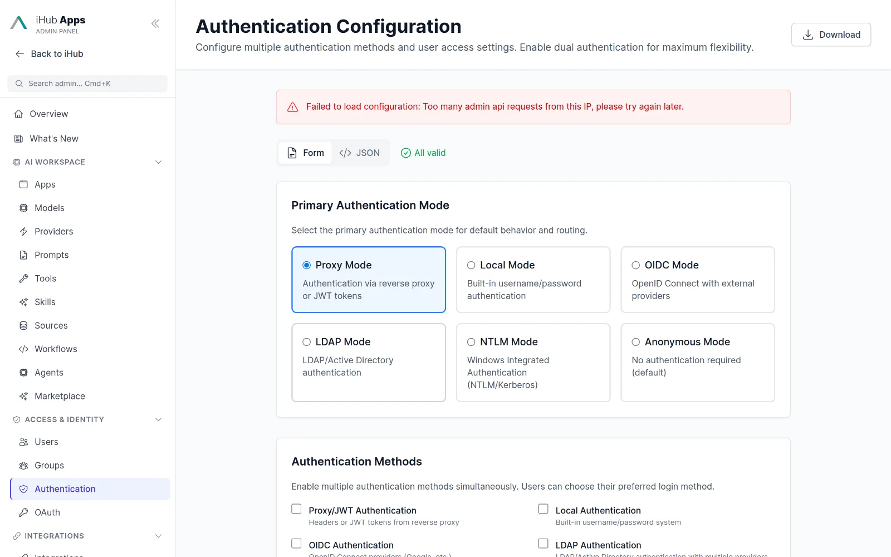
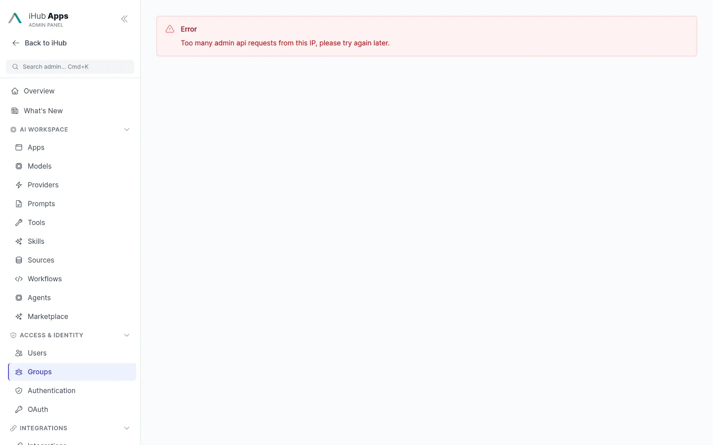
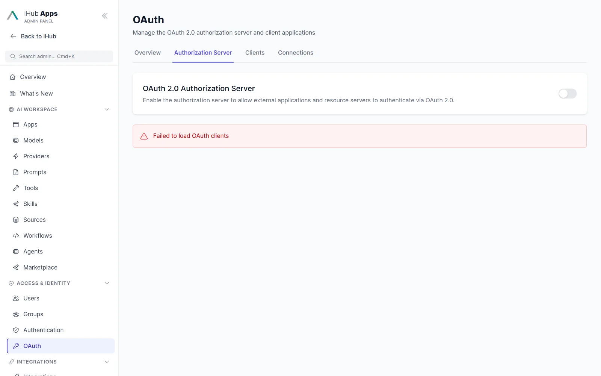
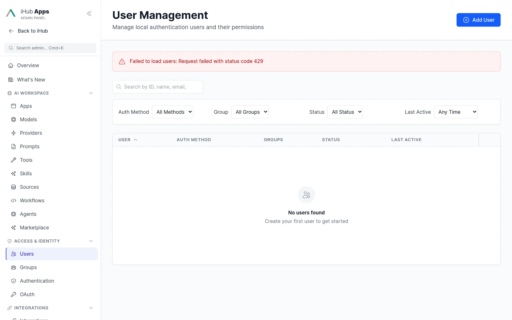
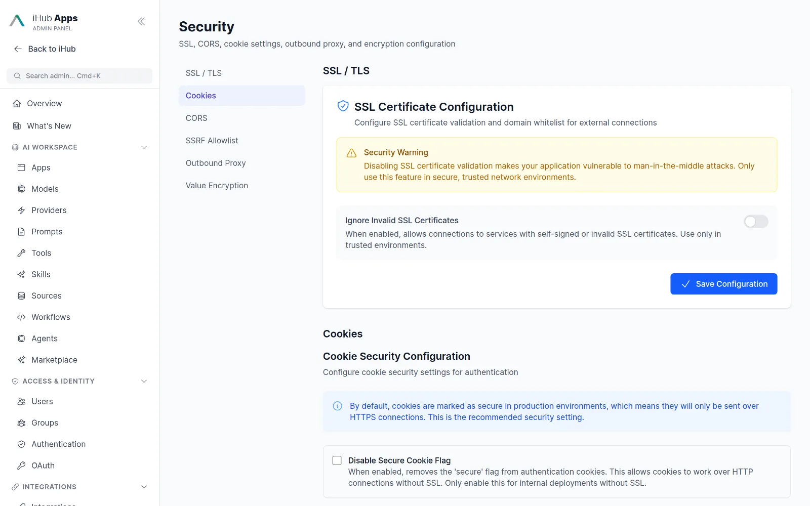
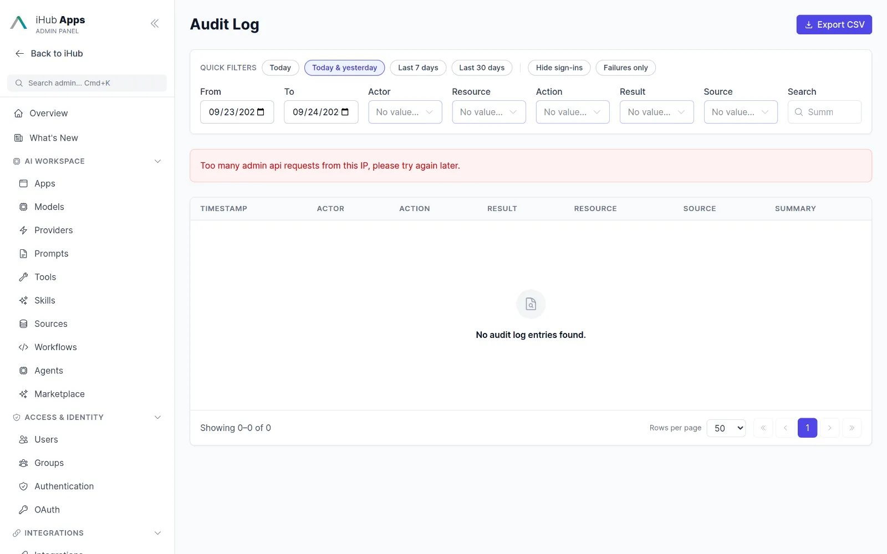
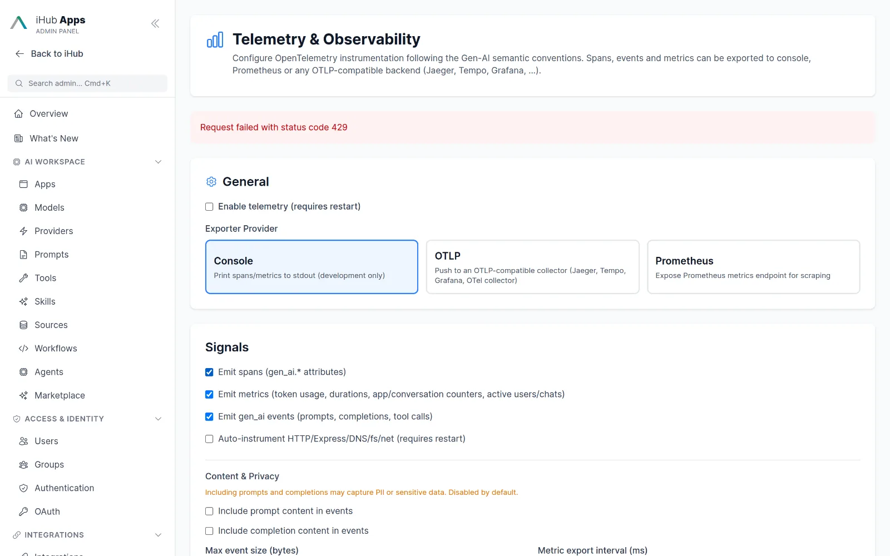
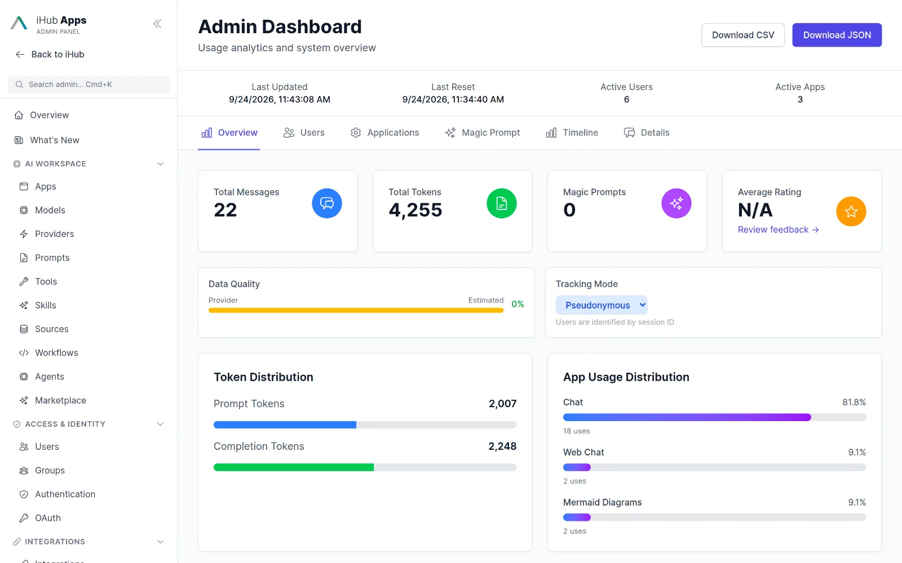

Your data, your rules, your servers.
iHub Apps runs where you decide, authenticates against the directory you already have, and writes an audit trail for everything. Data sovereignty is not a tier, it is the default.

Deployment options.
The same package for a laptop and for a regulated data centre.
Single binary
Linux, macOS, Windows. No Node.js, no Docker, no database. Base64 variants for restricted networks.
Docker & Kubernetes
Official image on GitHub Container Registry, compose files and an nginx example. Multi-worker and multi-server ready.
On-premise & air-gapped
Run with local models and no outbound traffic. Outbound proxy support and SSL allowlists for corporate networks.
IntraFind hosting
Managed operation and GPU inference in German data centres with tenant separation and IP allowlisting.
Identity and access.
Every login mode your organization uses
Anonymous, local accounts, OpenID Connect with several providers at once, ADFS, LDAP with group lookup, NTLM / Windows integrated, proxy headers and pure JWT providers, Microsoft Teams single sign-on. Modes combine.
- Login test for LDAP and OIDC in the admin UI
- Auto-redirect to a single provider
- Session timeout and secure cookie settings
Hierarchical groups with external mappings
Groups inherit from each other (admin → users → authenticated → anonymous) and map to directory groups. Permissions cover apps, prompts, models, skills, tools and workflows. Content admins manage only their own groups.

iHub as identity provider and OAuth server
Built-in OAuth 2.0 authorization server with client credentials, authorization code + PKCE, refresh tokens, consent, introspection, revocation and dynamic client registration. OIDC discovery, JWKS and userinfo for your other apps.

Users and personal keys
Local user management with activity view, connected apps and personal API keys that act as the user and never carry admin rights.

Protection and evidence.
Secrets encrypted at rest
API keys, OAuth tokens and platform secrets are AES-256-GCM encrypted with a key kept outside the configuration. A value-encryption tool encrypts anything else you paste into a config file.
- SSL certificate upload, CORS and cookie settings
- SSRF allowlist and outbound proxy
- Rate limiting in six categories, request concurrency limits

Audit log with retention
Admin actions, authentication events and configuration changes are written to an append-only JSONL log with filters kept in the URL, retention settings and a mirror to your logging stack.

OpenTelemetry with GenAI conventions
Spans, metrics, events and logs for every model call, tool call and workflow step. OTLP, Prometheus or console exporters. Prompts and completions are captured only if an admin opts in.

Usage reports without personal data
Tokens by app, model and user, magic-prompt statistics, timeline and CSV/JSON export. A pseudonymous tracking mode keeps individuals out of the reports.

Privacy by design.
Nothing stored by default
Conversations live in the browser session unless Durable Chats is enabled. Ephemeral apps never store anything. Incognito mode per chat.
Retention you control
Audit events, usage events, feedback and chats each have their own retention. IP addresses are anonymized and e-mail addresses masked in logs.
GDPR data-subject requests
A documented procedure covers access, export and deletion requests, and the data model tells you exactly where personal data can appear.
PII handling guide →Local models for sensitive work
Route sensitive apps to a local or IntraFind-hosted model and public scenarios to a cloud model. Model hints warn users about data classification.
Accessibility
Targets WCAG 2.2 AA, EN 301 549 and BITV 2.0; automated axe checks run in CI.
Open source
Every line of code is public under a BSD-3-Clause licence with attribution. Audit it, fork it, or ask IntraFind to certify a deployment with you.
Questions & answers
Is iHub Apps certified (ISO 27001, SOC 2)?
iHub Apps is software you run inside your own certified environment; the software itself carries no certificate. IntraFind supports customers with security documentation and hardening guides, and offers managed hosting on request.
Does any data go to IntraFind?
No. There is no telemetry to IntraFind. Updates are downloaded from GitHub releases only when an admin triggers them.
Does the model provider train on our data?
That depends on the provider and contract you choose. With local models or IntraFind-hosted GPUs, no data leaves your control.
Which authentication should we use?
Corporate SSO via OIDC (Microsoft Entra, Google, Keycloak, Okta, ADFS) is the recommended default. LDAP, NTLM and proxy authentication cover on-premise Windows environments.
Can we run it fully offline?
Yes. Use the binary, a local model server and the Base64 download variant for restricted networks. Documentation is served from the product.
Bring iHub into your security review.
Download the binary, read the security guide, and run it next to your identity provider. Every setting is documented and every change is audited.
curl -fsSL https://raw.githubusercontent.com/intrafind/ihub-apps/main/install.sh | sh